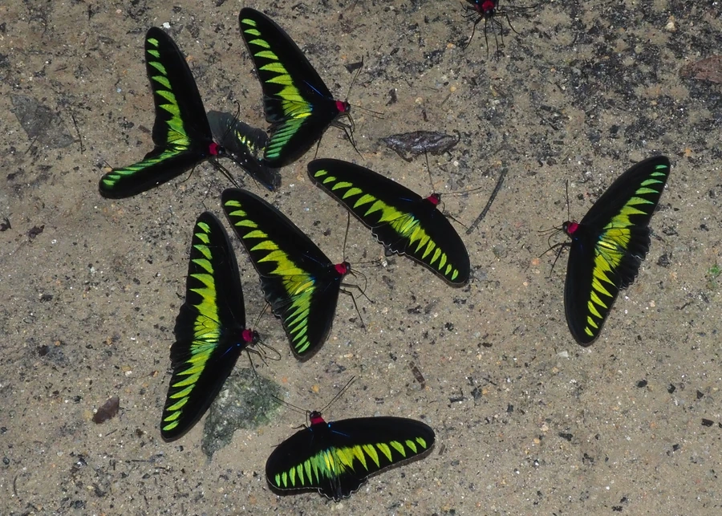

昆虫 · 动物界
红颈凤蝶 Trogonoptera brookiana

翅面漆黑、前翅排着一列翠绿三角斑，颈胸之间有一圈鲜红绒毛的大型凤蝶，栖息东南亚雨林，幼虫取食马兜铃。
- 分类
- 门节肢动物门纲昆虫纲目鳞翅目科凤蝶科属红颈凤蝶属
- 栖息环境
- 东南亚低地雨林、林缘与溪流旁的灌丛
- 地理分布
- 马来半岛、婆罗洲、苏门答腊等东南亚岛屿
- 保护级别
- 列入《濒危野生动植物种国际贸易公约》附录二，多国立法限制采集
物种志
红颈凤蝶的翅展约十至十二厘米，雌蝶比雄蝶更大。翅面底色漆黑，前翅沿翅脉排着七至九枚翠绿色三角形斑，后翅也有一列绿斑，翅缘呈波浪状并带尾突。头部与胸部之间有一圈鲜红色的绒毛，红颈之名由此而来，这圈红毛在它停歇时格外醒目。触角细长，腹部黑色而略带金属光泽，翅反面的绿斑较淡。
它分布于马来半岛、婆罗洲、苏门答腊等地的低地雨林，常沿林间溪流和开阔林道飞行，姿态轻快，喜在高处滑翔并访花吸蜜，雄蝶有时成群在溪边吸水。幼虫以马兜铃属藤本植物为食，雌蝶把卵产在寄主嫩叶上，幼虫取食后化蛹于枝条间。它被列入《濒危野生动植物种国际贸易公约》附录二，森林砍伐和商业采集是主要威胁，多国已立法限制捕捉与贸易。
形态与习性
- 翅展约十至十二厘米，雌蝶更大
- 翅斑黑底，前翅七至九枚翠绿三角斑
- 红颈头胸之间一圈鲜红色绒毛
- 食性幼虫取食马兜铃属藤本植物
- 习性喜沿溪流飞行，雄蝶常群集吸水
- 保护列入国际公约附录二
趣味知识
- 它颈后的那圈红毛并非羽毛，而是特化的鳞毛，在求偶和威吓时会竖起来。
- 翅上的翠绿三角斑其实是鳞片折射光线形成的结构色，磨掉鳞片就只剩黑色。
- 雌蝶数量远少于雄蝶，野外观察者见到的多是沿溪飞舞的雄蝶。